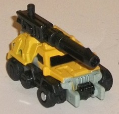
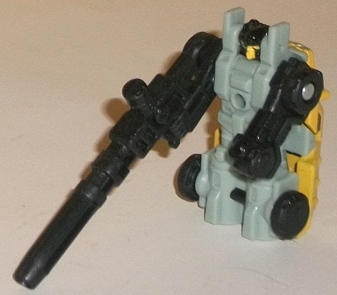
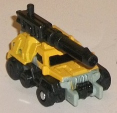
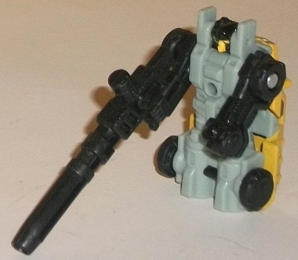
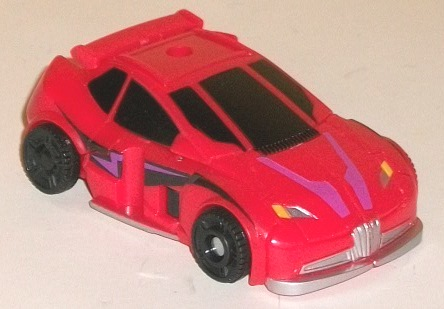
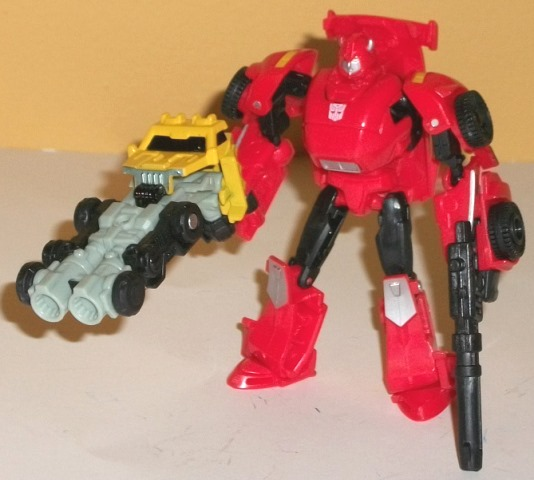

 
Difficulty of Transformations : Very Easy
Color Scheme : Black, mustard yellow, pale light green, and some silver
Individual Rating : 5.3
Allegiances
: Autobot
Size
: Legends 2-pack
(NOTE: Because this set is composed of repaints, this is not a full-blown review. This mainly covers any changes made to the set and the color scheme, and merely compares it to the original versions of these molds. For a review on Roller-- the mold used for Suppressor-- go here . For a review on Generations Legends Bumblebee-- the mold used for Cliffjumper-- go here .)
 Suppressor
Suppressor


Difficulty of Transformations
: Very
Easy
Color Scheme
: Black, mustard yellow,
pale light green, and some silver
Individual Rating
: 5.3
Suppressor doesn't seem
to be an homage to anyone in particular, and exists more because Cliffjumper
needs a little buddy in his 2-pack. Anyways, Suppressor has some rather
original colors, being primarily a mix of black, mustard yellow, and a
really pale, pastel shade of green, the latter of which is primarily hidden
in vehicle mode. The mustard yellow and black contrast against each other
quite well, and the yellow is dull enough where it's not obnoxious, even
when there's a lot of it. The shade of said yellow fits right in for the
vehicle mode. The light pastel green I'm a bit less crazy about, though
it does give the other colors a light, pale color to play off of-- I just
think these shades of green and yellow don't look all that hot together,
though the green and the black contrast against each other well enough.
All of the mustard yellow is paint, which is honestly a bit impressive
for a toy of this tiny size-- on the downside, this means that Suppressor's
robot mode is almost completely lacking in paint besides his yellow face,
but the vehicle windows are painted black and the front bumper has a bit
of silver on it.
No mold changes have
been made to Suppressor.
 Cliffjumper
Cliffjumper


Difficulty of Transformation
: Easy
Color Scheme
: Red, black, and some
silver, light metallic silvery blue, moderately dark violet, and dull yellow
Individual Rating
: 8.1
Cliffjumper follows his
usual pattern of being mostly red with black on the windows, wheels, and
some of his robot bits like his upper legs. As per usual, these two colors
go together excellently, even if they're not all that original, and as
per usual, there's a bit of silver to bring a light color accent to the
toy. The silver rims on the front and sides look particularly good and
help add a bit more color variety to both his modes-- particularly his
robot mode, which has a few less prominently visible paint apps than the
vehicle mode. This isn't a strictly by-the-numbers Bumblebee redeco, though;
the most obvious differences are the black-and-purple curved stripes on
the sides and the purple "V" stripes on the front hood. The violet looks
excellent against the black along those stripes on the sides, but unfortunately
because of the transformation, there's a rather unsightly gap in the stripe
on each side near the midpoint. I do wish the violet was a bit lighter
in coloration too, as it tends to blend in a bit too much when it's right
up against the red, as is the case with the hood stripes. I do like the
added color and the slight nod to Cliffjumper's "Dark Energon" fate in
the
Prime toyline
, though. For purely
accentual colors, Cliffjumper has dull yellow for his taillights and part
of his front headlights, which help add a bit more coloration, particularly
on the vehicle back end/robot shoulders, where it's really needed. That
said, the front headlights are an odd half-silver and half-yellow mix,
which looks a bit odd without any mold detailing to distinguish the yellow
bits as "blinkers" or anything. His eyes are a light metallic silvery blue,
which looks nice on his face sculpt.
No mold changes have
been made to this version of Cliffjumper; however, since he comes with
Suppressor, this mold now has its own rifle in addition to a Transformer-weapon,
which helps give this toy some much-needed firepower in robot mode.
The Cliffjumper & Suppressor set is one of the better 30th Anniversary "Legends 2-packs" in the Generations line. Both of these molds aren't bad for their size-- yeah, Supressor isn't amazing, but he's not bad either for the size-- and even if there's minor issues, the colors on both of them surpass the colors on the originals, in my opinion. I also love the addition of a little bit of "Dark Energon" paint on Cliffjumper. Mildly recommended, particularly if you want these molds but are sick of Bumblebee toys.
Reviews by Beastbot